🚀 Resolving Container Connectivity Issues with OpenShift CRC
If you’ve ever tried to run a container with OpenShift CRC (CodeReady Containers) and faced connectivity issues, particularly when your container can’t reach the CRC cluster, you’re not alone! This common issue occurs because of how Docker containers manage networking.
Here’s a step-by-step guide to fix the problem and get your container connected to the CRC cluster.
💡 Understanding the Issue
When you try to connect your container to the CRC cluster, you might encounter an error like this:
error: dial tcp 127.0.0.1:6443: connect: connection refused
This happens because the container's internal 127.0.0.1 or localhost refers to the container's network, not your host machine. The container needs to reach the cluster running on your host. Below are the solutions that can help.
🔧 Solutions
1️⃣ Use Host Network Mode
To allow the container to communicate with services running on the host (like CRC), you can run the container in the host’s network namespace using the --network="host" option.
docker run --network="host" -it my-openshift-azure-cli /bin/bash
This will grant the container direct access to your host's network, allowing it to communicate with the CRC cluster as if it were running directly on the host.
2️⃣ Check the CRC IP Address
If your CRC cluster isn’t reachable via localhost, it may be running on a different IP. You can retrieve the CRC cluster’s IP address using the following command:
crc ip
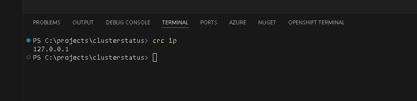
Once you have the correct IP, use it in the oc login command to connect to your CRC cluster:
oc login --token=sha256~Kgwa3j6UQZFXQCq_IHNITHNdRf7IduFDJTL2DnQRYZY --server=https://
oc login --token=sha256~Kgwa3j6UQZFXQCq_IHNITHNdRf7IduFDJTL2DnQRYZY --server=https://127.0.0.1:6443
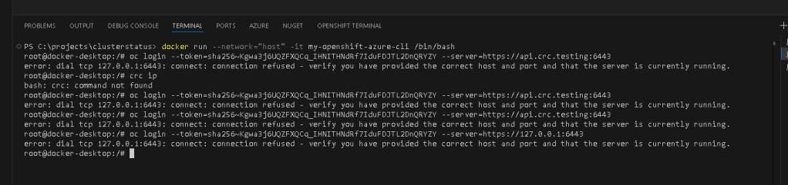
3️⃣ Expose CRC API to the Docker Network
You can also expose the CRC API port to the Docker network by mapping the required port when running your container. Use the -p flag to forward the port between the host and the container:
docker run -p 6443:6443 -it my-openshift-azure-cli /bin/bash
This maps the container’s port 6443 to your host’s port 6443, enabling communication between your container and the CRC API.
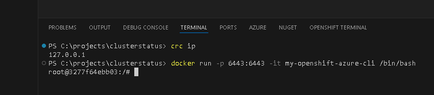
Here’s a screenshot showing the common error when trying to connect to CRC from within a container:
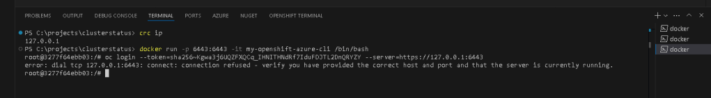
🔄 Summary
Using one of the methods above should solve your connectivity issue and allow you to connect your container to the CRC cluster seamlessly. Whether you choose to run your container in host network mode, check the CRC IP address, or map ports, each solution has its own use case depending on your setup.
Let me know which solution worked for you or if you need any further help!
It looks like the CRC IP is still showing as 127.0.0.1, which refers to the loopback address, meaning the container is trying to connect to itself, not the host. This is a common issue when using CRC on Windows or macOS, where CRC runs in a virtual machine, and the IP address can sometimes be misreported as 127.0.0.1.
To resolve this, we need to:
1️⃣ Check the Actual IP of the CRC VM
On Windows, CRC often runs inside a VM (using Hyper-V or VirtualBox), and the actual IP of the CRC VM might be different from 127.0.0.1.
Here’s how to find the real IP of the CRC VM:
Using crc command:
- If you are using a virtual machine (like Hyper-V), try using the command
crc status. This may show the correct IP address of the VM.
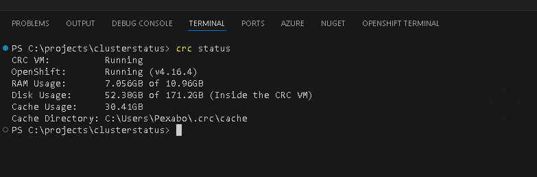
Using ipconfig:
- Run
ipconfigon your host machine and check for any new interfaces that correspond to the CRC VM. You’re looking for an interface that has an IP address different from127.0.0.1.
Once you have the correct IP of the CRC VM, try using that IP in your oc login command instead of 127.0.0.1.
`e Directory: C:\Users\Pexabo.crc\cache
PS C:\projects\clusterstatus> ipconfig
Windows IP Configuration
Ethernet adapter vEthernet (Default Switch):
Connection-specific DNS Suffix . :
Link-local IPv6 Address . . . . . : fe80::c992:6bc:fe69:750c%47
IPv4 Address. . . . . . . . . . . : 172.24.128.1
Subnet Mask . . . . . . . . . . . : 255.255.240.0
Default Gateway . . . . . . . . . :
Ethernet adapter Ethernet 3:
Connection-specific DNS Suffix . :
Link-local IPv6 Address . . . . . : fe80::b809:8fef:506a:ba52%22
IPv4 Address. . . . . . . . . . . : 192.168.3.46
Subnet Mask . . . . . . . . . . . : 255.255.255.0
Default Gateway . . . . . . . . . : 192.168.3.1
Ethernet adapter Ethernet 4:
Connection-specific DNS Suffix . :
Link-local IPv6 Address . . . . . : fe80::bab2:4f00:44b8:4fbe%12
Autoconfiguration IPv4 Address. . : 169.254.189.40
Subnet Mask . . . . . . . . . . . : 255.255.0.0
Default Gateway . . . . . . . . . :
Wireless LAN adapter Local Area Connection* 1:
Media State . . . . . . . . . . . : Media disconnected
Connection-specific DNS Suffix . :
Wireless LAN adapter Local Area Connection* 2:
Media State . . . . . . . . . . . : Media disconnected
Connection-specific DNS Suffix . :
Ethernet adapter VMware Network Adapter VMnet1:
Connection-specific DNS Suffix . :
Link-local IPv6 Address . . . . . : fe80::c021:1963:32f4:171f%21
IPv4 Address. . . . . . . . . . . : 192.168.37.1
Subnet Mask . . . . . . . . . . . : 255.255.255.0
Default Gateway . . . . . . . . . :
Ethernet adapter VMware Network Adapter VMnet8:
Connection-specific DNS Suffix . :
Link-local IPv6 Address . . . . . : fe80::477:7d40:ca2b:e5ab%10
IPv4 Address. . . . . . . . . . . : 192.168.28.1
Subnet Mask . . . . . . . . . . . : 255.255.255.0
Default Gateway . . . . . . . . . :
Wireless LAN adapter WiFi:
Media State . . . . . . . . . . . : Media disconnected
Connection-specific DNS Suffix . :
Ethernet adapter Bluetooth Network Connection 4:
Media State . . . . . . . . . . . : Media disconnected
Connection-specific DNS Suffix . :
Ethernet adapter vEthernet (WSL (Hyper-V firewall)):
Connection-specific DNS Suffix . :
Link-local IPv6 Address . . . . . : fe80::1f3d:fec6:55f5:989f%69
IPv4 Address. . . . . . . . . . . : 172.25.176.1
Subnet Mask . . . . . . . . . . . : 255.255.240.0
Default Gateway . . . . . . . . .`
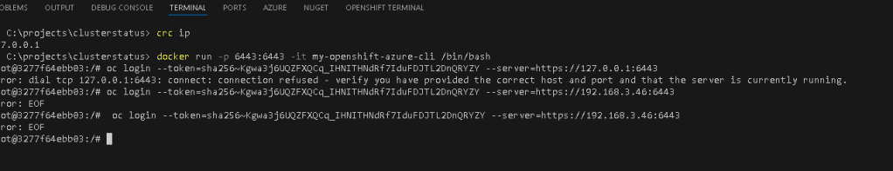
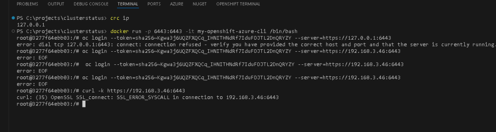
oc login --token=sha256~ZE7SOmu_PIR3-V4xJYnRAOPWV1UmVSfY0mw32GeAdhE --server=https://api.crc.testing:6443
oc login --token=sha256~ZE7SOmu_PIR3-V4xJYnRAOPWV1UmVSfY0mw32GeAdhE --server=https://192.168.3.46:6443
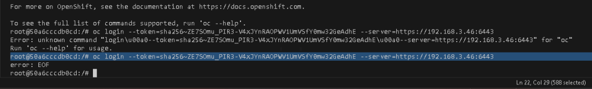
The error you're seeing (unknown command "login\u00a0--token=...") suggests that there are non-breaking spaces (\u00a0) in the command. These characters can be introduced when copying and pasting commands from certain text editors or websites.
To fix this:
- Re-type the command manually, or ensure that any space characters are actual spaces (
\u0020) rather than non-breaking spaces.
Here's the correct command:
oc login --token=sha256~ZE7SOmu_PIR3-V4xJYnRAOPWV1UmVSfY0mw32GeAdhE --server=https://192.168.3.46:6443
Make sure that:
-
There are no extra characters or invisible spaces between
login,--token, and--server. -
Ensure all spaces are plain spaces (not non-breaking or any other special character).
You can also try typing the command line directly into the terminal rather than pasting it to avoid this issue.
Let me know how it goes after retyping the command!
2️⃣ Use a Port Mapping Tool
If you're still unable to get the actual IP, you could use a port forwarding tool such as socat or SSH tunneling to forward traffic between your container and the CRC VM.
For example, you could forward traffic from localhost:6443 to the actual CRC IP address like this:
socat TCP-LISTEN:6443,fork TCP:
This will forward any requests made to localhost:6443 to the correct CRC VM IP.
3️⃣ Test Connectivity with Curl
To verify if the CRC API is reachable from within the container, you can use curl:
curl https://
If the connection is successful, you should see a response from the OpenShift API server.
After identifying the correct CRC IP or setting up port forwarding, try running your oc login command again using the correct IP:
oc login --token=sha256~Kgwa3j6UQZFXQCq_IHNITHNdRf7IduFDJTL2DnQRYZY --server=https://
Let me know how it goes!
It seems that the issue with the command (unknown command "login\u00a0--token=...") is still caused by non-breaking spaces (\u00a0). However, when you fixed that, you're encountering the error: EOF issue, which we discussed earlier.
1️⃣ Fixing Non-Breaking Spaces:
Before addressing the EOF issue again, let's ensure you're inputting a clean command. It's possible that the terminal still includes non-visible characters from previous inputs. Here's what to try:
-
Re-type the entire command manually in the terminal, ensuring there are no copy-paste issues.
-
If you prefer to copy and paste, first paste it into a simple text editor (like Notepad) to strip out any hidden formatting before pasting it into your terminal.
The correct command (ensure no invisible spaces):
oc login --token=sha256~ZE7SOmu_PIR3-V4xJYnRAOPWV1UmVSfY0mw32GeAdhE --server=https://192.168.3.46:6443
2️⃣ Investigating the EOF Issue:
Once the command structure is clean, the EOF error could be happening due to the following reasons:
-
Network connectivity issues between your container and the OpenShift CRC API.
-
Firewall restrictions that prevent the container from accessing the CRC IP.
-
Incorrect configuration or certificate issues on the OpenShift CRC cluster.
Here’s how you can further troubleshoot:
a) Test Network Connectivity
From within the container, try to ping the CRC IP (192.168.3.46) to see if it’s reachable:
ping 192.168.3.46
If you don’t get a response, it suggests a network issue.
b) Test API Access with curl
Try using curl from within the container to see if you can access the CRC API endpoint:
curl -k https://192.168.3.46:6443
If this also fails with an EOF error or no response, it indicates that the API is not reachable from the container.
c) Check CRC Status
On your host machine, run the following commands to ensure CRC is running and the API is accessible:
crc status
crc start
Ensure the CRC cluster is running and accessible on the correct IP address.
d) Port Mapping
Since CRC is running inside a VM, there might be issues with Docker networking. You can try port forwarding again:
socat TCP-LISTEN:6443,fork TCP:192.168.3.46:6443
This will forward requests made to localhost:6443 on your Docker container to the CRC VM.
Summary:
-
Ensure the
oc logincommand is correctly typed (no non-breaking spaces). -
Check network connectivity between the container and the CRC IP (
pingandcurl). -
Verify the CRC cluster status on your host machine.
-
Use
socatfor port forwarding if needed.
Let me know if any of these steps work, or if you need further assistance!
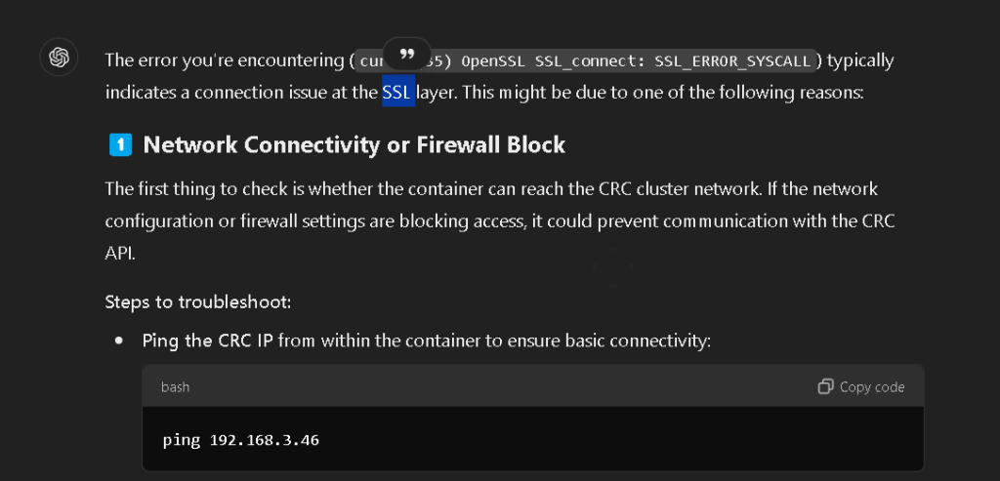
Ping needs to be in the machne
It looks like the ping command isn't available in your container. You can install it by installing the iputils-ping package. Here’s how to install and use ping in your container:
1️⃣ Install ping in the Container
Run the following command to install the necessary package:
apt-get update && apt-get install -y iputils-ping
2️⃣ Ping the CRC IP
Once ping is installed, try pinging the CRC IP to test connectivity:
ping 192.168.3.46
This will allow you to check if the container can reach the CRC VM.
3️⃣ Next Steps
-
If the ping is successful, then the issue is likely SSL-related, and you can focus on troubleshooting the certificate issue or network forwarding.
-
If the ping fails, this suggests a networking issue between the Docker container and the CRC VM, which would require adjusting the network settings or using port forwarding.
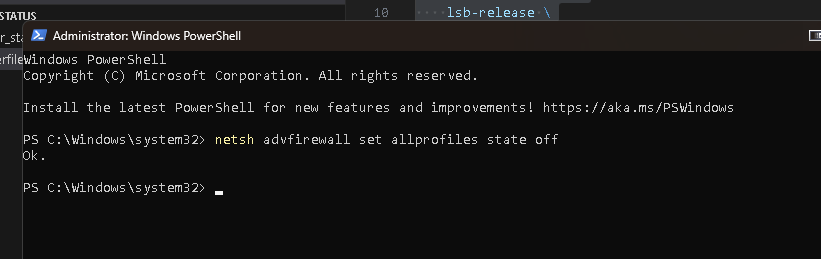
The SSL_ERROR_SYSCALL indicates that the connection was terminated unexpectedly, and since the network connectivity (as confirmed by the ping) is fine, this points to a problem either with:
-
The OpenShift API server (CRC) not running or misconfigured.
-
SSL/TLS issues between the container and the CRC API.
Troubleshooting Steps:
1️⃣ Check CRC Logs and Status:
Ensure that the CRC OpenShift API is actually running. Run the following commands on your host machine (outside the container):
crc status
crc log
-
crc status: This will show if the OpenShift cluster is running and reachable.
-
crc log: This will provide details on whether the API server is experiencing any issues.
If you see anything in the logs indicating that the API is not running or encountering errors, restarting the CRC might help:
crc stop
crc start
After restarting, try accessing the API again with curl from the container:
curl -k https://192.168.3.46:6443
2️⃣ Check for Firewall or Security Group Rules:
Since the ping works, but curl doesn't, it’s possible that traffic on port 6443 is being blocked. Check for any firewall rules on your host machine that might prevent access to the OpenShift API.
You can try disabling your firewall temporarily and testing the connection again:
netsh advfirewall set allprofiles state off
Then run curl again from the container to see if the connection works without the firewall.
3️⃣ SSL/TLS Version Mismatch:
Sometimes the issue may arise due to incompatibilities between the SSL/TLS versions supported by the CRC API and the version of OpenSSL or curl in the container. Try updating the container’s SSL packages:
apt-get update && apt-get upgrade -y openssl curl
Then retry the curl command.
4️⃣ Check Certificate Configuration:
Since you're ignoring SSL verification with -k, it could still indicate a deeper SSL issue. You could also try to access the API from outside the container (on the host machine) using:
curl -k https://192.168.3.46:6443
This helps determine whether the issue is specific to the container or affects the whole system.
If None of These Work:
If the problem persists after checking the API status, firewall, and SSL versions, you could try using port forwarding with socat as a workaround:
socat TCP-LISTEN:6443,fork TCP:192.168.3.46:6443
Then attempt logging in from the container with localhost as the server:
oc login --token=sha256~ZE7SOmu_PIR3-V4xJYnRAOPWV1UmVSfY0mw32GeAdhE --server=https://localhost:6443
Let me know what the CRC logs say or if any of these steps help solve the issue!
Let me know the result of the ping test, and we can proceed from there!
apt-get update && apt-get upgrade -y openssl curl
CRC STOPPED?
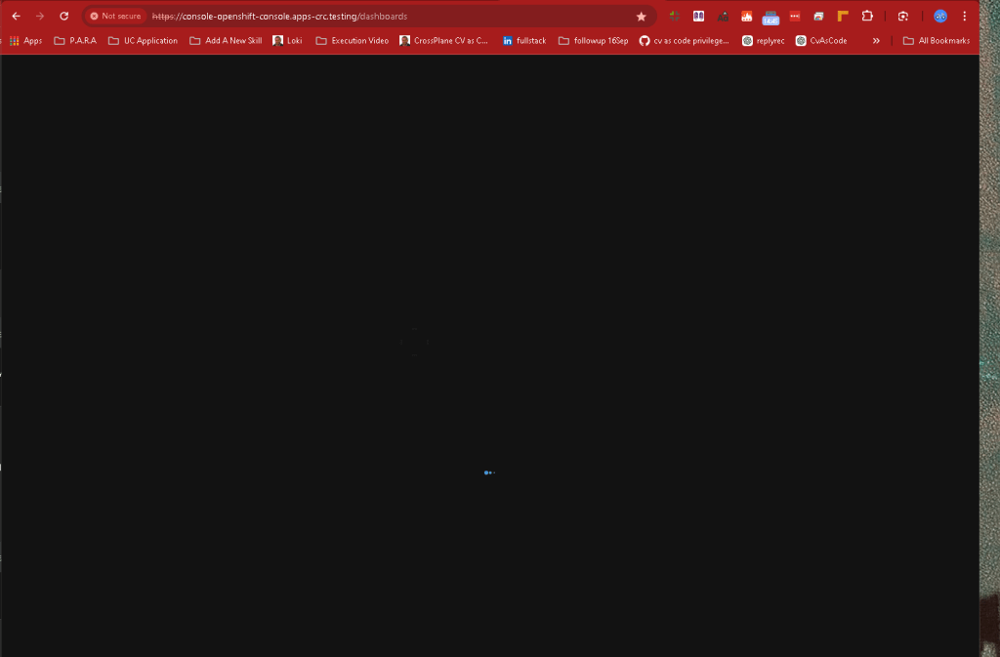
oc login --token=sha256~r9LQqe-ivxEG0-LnjdA2oXQ7fuU_5Y4HViHq-3bWE3A --server=https://192.168.3.46:6443
not in openshift this is running in docker engine desktop
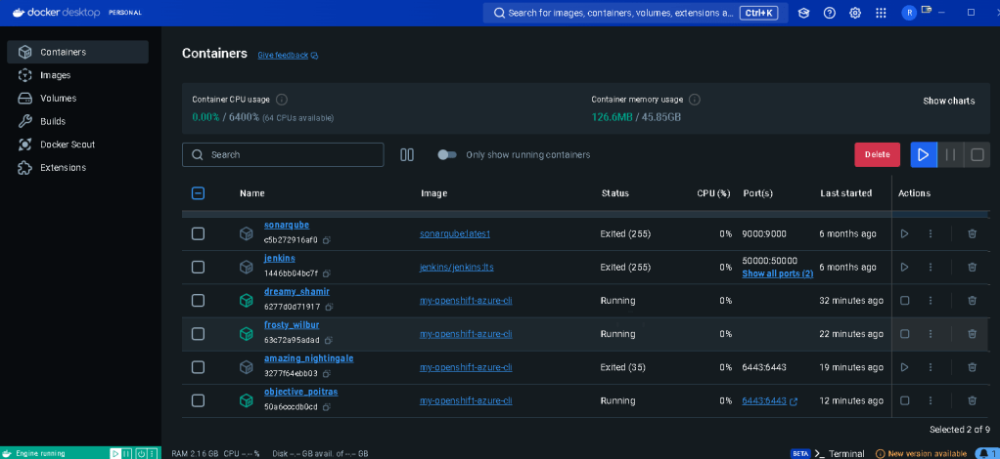
When running a container inside Docker Desktop (on Windows or macOS) and trying to connect to a CRC instance, you may face network isolation issues since Docker Desktop containers and the CRC VM might not be on the same network. Here’s a breakdown of how you can resolve this:
1️⃣ Understand the Network Setup
When you run CRC on Docker Desktop, CRC typically runs in its own virtual machine (VM), and Docker containers are isolated within their own network. As a result, Docker containers cannot directly access services running on the CRC VM via localhost or 127.0.0.1.
To make the connection work, you’ll need to:
-
Use the actual IP address of the CRC VM.
-
Ensure Docker containers can reach the CRC VM.
2️⃣ Find the Actual IP Address of the CRC VM
On Windows or macOS, the IP of the CRC VM may not be 127.0.0.1, but rather a different network address. You can get the real IP of the CRC instance by running the following command on your host (outside the container):
crc ip
The IP address provided by this command is the one you should use to connect from the container, not 127.0.0.1. However, there might still be some network isolation issues between Docker containers and CRC, so read on for how to resolve this.
3️⃣ Enable Docker Container Access to CRC
Option 1: Use Host Network Mode (Linux)
If you're using Docker on Linux, you can run the Docker container in host network mode so it shares the host's network stack:
docker run --network="host" -it my-openshift-azure-cli /bin/bash
In this mode, the container will be able to access any services running on the host or its VM (like CRC) using localhost or the VM’s IP.
However, Docker Desktop on Windows and macOS does not support --network=host, so you'll need to try other options.
Option 2: Port Forwarding
For Windows and macOS Docker Desktop, you can forward the CRC API port from the CRC VM to the host machine’s localhost using socat or similar tools.
- Install Socat on the Host:
Ifsocatis not already installed, you can install it on your host machine: For Windows, you might need a tool like WSL (Windows Subsystem for Linux) or use a socat Windows binary. For macOS:
brew install socat
- Set up port forwarding:
Usesocatto forward the CRC API port from the VM to the Docker host:
socat TCP-LISTEN:6443,fork TCP:
This command will forward traffic from the local machine's port 6443 to the CRC API's port 6443.
- Login from the Docker Container:
Inside your Docker container, connect tolocalhost:6443(which is now forwarded to the CRC VM’s API) instead of the CRC IP:
oc login --token=
Option 3: Bridge Docker and Host Network (Windows/macOS)
You can create a custom Docker network and ensure that the CRC VM and the Docker container are on the same subnet.
- Find the CRC IP:
As mentioned, get the CRC VM's IP using:
crc ip
- Create a Custom Docker Network:
Create a Docker network that matches the CRC VM's subnet.
docker network create --subnet=
Example: If your CRC VM IP is 192.168.3.46, and its subnet is 192.168.3.0/24, then create a Docker network within that subnet:
docker network create --subnet=192.168.3.0/24 mynetwork
- Run the Container in the Custom Network:
Launch your Docker container in the custom network:
docker run --network=mynetwork -it my-openshift-azure-cli /bin/bash
Now the container should be able to communicate with CRC at its actual IP.
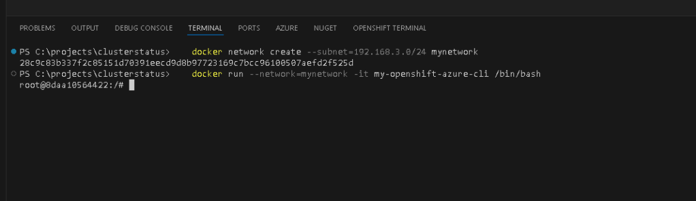
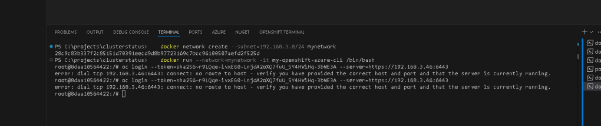
my ip is wring at the start
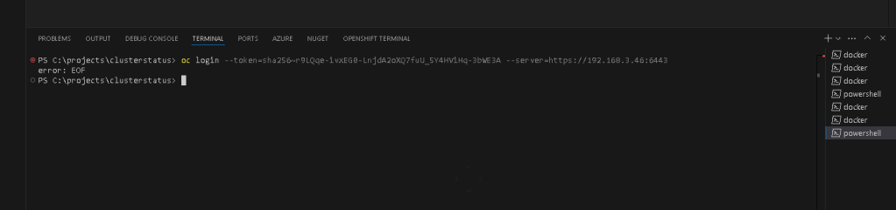
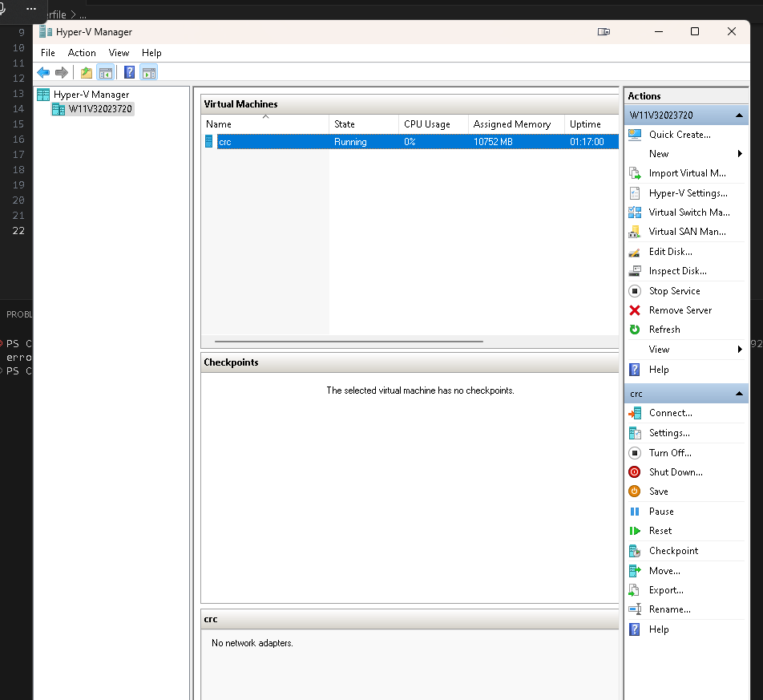
It looks like your Hyper-V CRC VM is running, but it shows "No network adapters" in the VM summary, which is likely why you're unable to connect to the CRC instance from Docker. The VM needs a virtual network adapter to communicate with the host and external systems.
Here are the steps to check and configure the network adapter for the CRC VM:
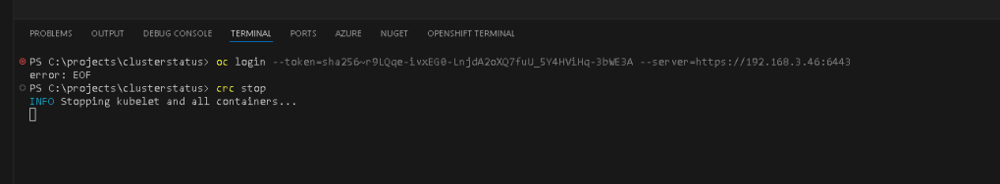
1️⃣ Add a Network Adapter to the CRC VM
-
In Hyper-V Manager, select your CRC VM.
-
In the right-hand Actions panel, click on Settings.
-
In the settings window, under Hardware, click Add Hardware and select Network Adapter.
-
Connect the network adapter to a Virtual Switch (preferably the default or the one connected to your host machine's network).
-
Apply the changes and restart the CRC VM.
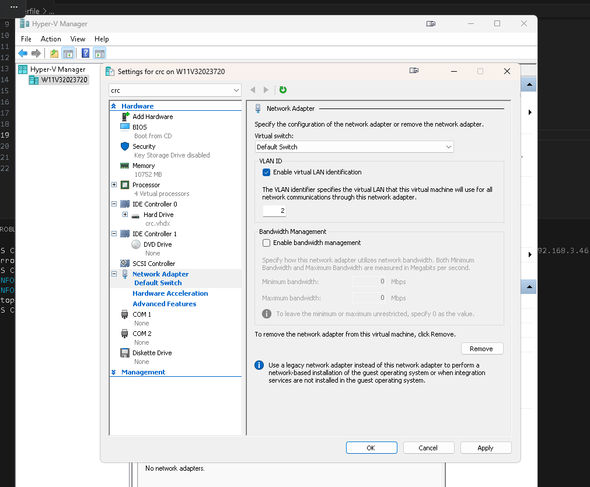
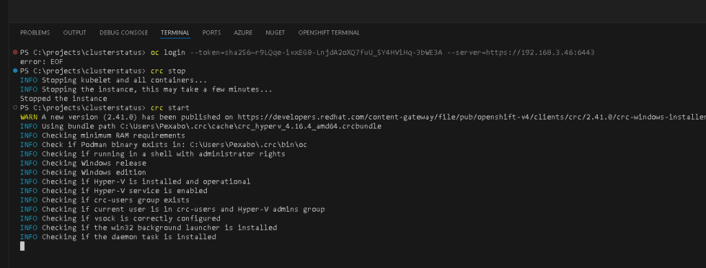
2️⃣ Verify the IP Address
Once the CRC VM has a network adapter, it should get an IP address from the virtual switch's network. You can retrieve this IP address using the following methods:
- Inside the CRC VM: If you can connect to the VM console, use this command to check the IP:
ip addr show
Look for the network interface that is connected to your virtual switch and note the IP address.
-
Using Hyper-V Manager: Sometimes, the IP address might be displayed in the VM's summary page after it gets a network adapter and is restarted.
-
On your Host: You can use the
crc ipcommand on your host machine:
CRC IP IS THE ISSUE
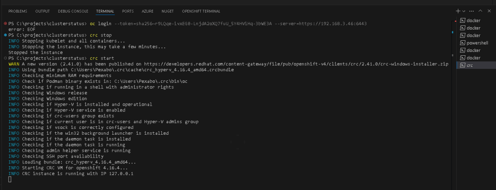
crc ip
3️⃣ Check Network Connectivity
Once the network adapter is added and the CRC VM gets an IP address, try:
- Ping the CRC IP from your Docker container or host to ensure the connection is established:
ping
- Run the
oc logincommand again using the correct CRC IP:
oc login --token=
If the CRC VM is now properly configured with a network adapter, your Docker container should be able to communicate with the CRC OpenShift API.
Let me know if adding the network adapter resolves the issue!
4️⃣ Check Firewall Settings
If you still can't connect, check whether the host machine’s firewall is blocking connections on port 6443. You can temporarily disable the firewall to test connectivity.
On Windows:
-
Open Windows Defender Firewall and disable it temporarily.
-
Alternatively, use PowerShell to turn off the firewall:
netsh advfirewall set allprofiles state off
Once the firewall is disabled, try logging in again from the container.
Summary of Steps:
-
Find the actual IP of the CRC VM using
crc ip. -
If using Linux, try running Docker with
--network="host". -
For Windows/macOS, use
socatto forward the CRC API port to the local machine, and connect usinglocalhost:6443. -
Create a custom Docker network on the same subnet as the CRC VM if port forwarding isn’t an option.
-
Check firewall settings to ensure they aren’t blocking access.
Let me know how it goes or if you run into any issues!
🔗 Connect with Me:
Happy coding and troubleshooting! 🛠️
Imported from rifaterdemsahin.com · 2025